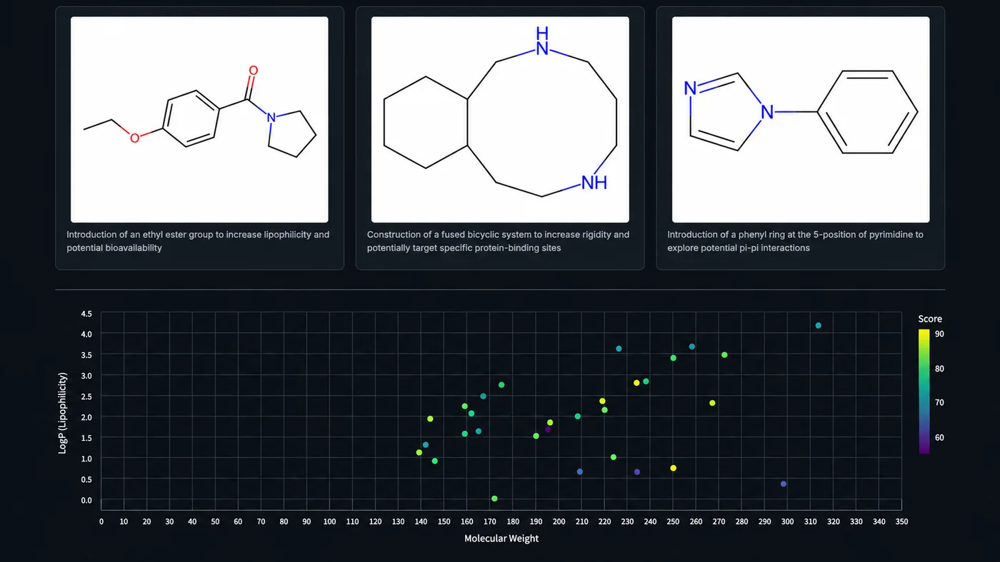

An AI drug-ideation system that works like an early-stage medicinal chemistry team: it proposes candidate molecules, scores them, improves them and ranks the best for a human to review, in seconds.
Checks 80+ drug candidates in seconds. Final submission.

Candidate molecules and their scores in the Consensus dashboard.
the problem
Early drug discovery means weighing many competing constraints at once. Most AI tools check them one at a time, which is slow and misses the trade-offs between them.
how it works
Generates several candidate drug concepts instead of a single molecule.
Scores each one on the properties a chemist weighs together: target binding, toxicity and side-effect risk, drug-likeness (solubility and stability), synthetic feasibility, and novelty against existing compounds.
Agents improve the candidates over several rounds and agree on a ranking for human review.
Runs on Cerebras for very fast inference, so many candidates are evaluated in parallel in one interactive session.